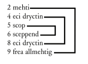
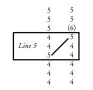

§ C.1 For most of the last two hundred years, scholarly interest in Cædmon’s Hymn has concentrated on the oral, folkloric and traditional Germanic aspects of Cædmon’s story and oeuvre. The last forty years, however, have also seen the development of a body of work that attempts to explicate the Hymn’s formal structure in light of classical and medieval theories of numeric and geometric patterning. This approach has its origins in the case of Cædmon’s Hymn in the work of Huppé and Bloomfield (Huppé 1968; Bloomfield 1962). Its most significant proponents in recent years have included Schwab and Howlett (Schwab 1972, esp. 51-57; Schwab 1983b, 23-27; Howlett 1974; Howlett 1997, 269-274).
§ C.2 It is difficult to know what to make of this research. On the one hand, claims made by its proponents are often very subtle and, to modern eyes at least, occasionally strain credulity: very few interpretations depend on falsifiable observations or premises, and different scholars can end up using identical evidence to demonstrate opposing arguments—or seemingly opposed evidence to arrive at identical conclusions. On the other, however, numerical and geometric patterns are undeniably part of medieval exegetical and compositional practice, and, as Curtius reminds us, suffer from many of the same problems associated with modern study of the phenomenon. This is true even when the authors in question explain the reasoning behind their compositions. Thus, for example, Walafrid Strabo shows a strong predilection for “round” numbers (numbers divisible by 5 or 10) in his Latin poetry—a fact he comments upon at least twice himself (numbers 38 and 5, ed. Dümmler 1964, 2: 390 and 355; see Curtius 1973, 506). An exception to this practice, however, is an 84 line poem addressed to Lothair (number 76, ed. Dümmler 1964, 2: 413-414). As Walafrid explains (lines 83-84), this length was determined by the age attained by the prophet Anna at the time of the birth of Christ (Luke 2:37), a biblical event otherwise unrelated to the contents of the poem. Had Walafrid not noted this fact, modern readers would most likely have considered the length of the poem to be a matter of chance. As Curtius notes (507),
[I]n Walafrid’s poem 84 occurs as a number sanctified by being mentioned in the Bible, and if Anna had been 83 the Emperor would have received a poem of 83 lines. In this connection it should be noted that no symbolic religious meaning is inherent in Anna’s age in itself. We may, however, assume that patristic Biblical allegoresis gave a moral interpretation to this number... but there is no inner relation between such an interpretation and the content of the poem. Walafrid has here used the “Biblical number” merely as an outer framework and stopping-point, just as elsewhere he uses round numbers....
§ C.3 Cædmon, unlike Walafrid, left no account of the numerical and geometric structures, if any, he observed in his composition. Certain patterns, however, do appear to be significant. Numerically, for example, multiples of three appear to have a structural importance—perhaps indicating, as Howlett has argued, a Trinitarian interest on the part of the poet (Howlett 1997, 269). Geometrically, the poem divides rhetorically into sections of four lines (on heavenly creation) and five lines (on earthly creation), a symbolic ratio that Schwab argues commonly was used in medieval exegesis and is found in two other early creation poems, the Carmen ad Deum (Sancte Sator) and the Old High German Wessobrunner Gebet (Schwab 1983b, 24). The nominative singular pronoun He at the beginning of 5a may acquire extra symbolic prominence from its geometric location at the approximate middle of the poem (Schwab 1983b, 23; Howlett 1997, 272). Finally, Schwab suggests that a series of symmetrically and concentrically arranged etymological cognates in the poem also may have a symbolic significance (25):
The literal repetitions which we find in the poem can hardly be due to the poet’s lack of word-power: they also occur in symmetrical positions, being arranged in a concentric order:

If we assume that the central position is also one of special semantic importance, the message of this concentric structure would read: the Creator (lines 5 + 6) is the eternal Lord (lines 4 + 8) who is almighty (lines 2 + 9)—a dogmatic statement underlined and expressed by the systematic (and therefore “beautiful”) ordo verborum.
§ C.4 Whether or not these patterns point to the use of conscious numeric and geometric patterning on Cædmon’s part is difficult to determine in the absence of an explicit account of the principles of composition used.[1] For one thing, few of the patterns identified by scholars of the poem appear to reinforce each other. Howlett’s observation that the pronoun He in 5a is the “twenty-first of forty-two words and the forty-first of eighty-one syllables” (Howlett 1997, 272), for example, can also be understood as indicating that the Hymn as a whole does not have a single geometric centre[2]: measured in syllables, the centre of the poem falls on He (5a); measured in words, the mid-point comes between He and aerist (5a); measured in half-lines, it falls between scop and eordu/ aelda (5a-5b).[3]
§ C.5 Schwab’s claims about the symmetrical and concentric arrangement of the etymological pairs in the poem show a similar difficulty. The pairs in question are separated from their neighbours by different intervals, rotate around different axes, and are arranged asymmetrically within the poem as a whole. The first element of the first pair, maecti, 2a, is found thirteen syllables, six words, and two half-lines from the beginning of the poem; its etymological partner, the second half of allmectig, 9b, constitutes the last two syllables of the last word. The interval between maecti, 2a, and eci, 4a, the first elements of the first two etymological pairs in Schwab’s schema, is sixteen syllables, nine words, and three half-lines; the second elements of the pairings, eci, 8a, and allmectig, 9b, are separated by eleven syllables, six words, and two half-lines.
§ C.6 The geometric centres implied by these three sets of etymological pairs also are not the same. The first pair, maecti and allmectig, 2a and 9b, are separated by sixty-three syllables, thirty-four words, and fourteen half-lines; their axis falls on the first syllable of barnum, 5b, when measured in syllables, between eordu/ aelda and barnum, 5b, when measured in words, and between barnum, 5b, and heben, 6a, when measured in half-lines. The second pairing, eci dryctin, 4a and 8a, are separated by thirty syllables, sixteen words, and seven half-lines; their axis falls between heben and til, 6a, when measured in syllables or words and on the verse heben til hrofe as a whole when measured in half-lines. Finally, the elements of the innermost pairing, scop, 5a, and sceppend, 6b, are separated by eleven syllables, six words, two half-lines; their axis falls on the last syllable of heben, 6a, when measured in syllables, between heben and til, 6a, when measured in words and between barnum and heben (i.e. between 5b and 6a) when measured in half-lines.[4]
§ C.7 The imprecision of these claims is significant only to the extent that such numerical and geometric analyses of the Hymn are supposed to represent specific and precise principles of composition adhered to by Cædmon himself, in some cases in preference to other statistically demonstrable features of traditional Germanic metre.[5] While their arrangement is not precisely concentric and symmetrical, for example, the etymological pairings pointed to by Schwab do exist and are arranged approximately around the centre of the poem. They presumably have some structural or aesthetic importance, even if they do not all point to the same word, syllable, or half-line. Likewise, the arguments of Howlett and Schwab about the pronoun in 5a are supported to a certain extent by the structure of the surviving text: He is the first word of the middle line of the poem and it does mark the beginning of the several changes in the poem’s structure and content: stylistically from the spare diction in the first part of the poem to the heavily ornamental poetic variation and repetition in the second (O’Donnell 2004); thematically from a concern with the theology of spiritual creation in the first four lines to an interest in temporal creation in the last five (Schwab 1983b, 24). While claims that the pronoun itself receives a special rhetorical emphasis are not supported by any metrical or syntactical evidence (He appears both early in the clause and does not participate in the alliteration, both signs that it received low linguistic stress; see Momma 1997, 94-95), the pronoun is the only reference to God in a line that, unusually for Cædmon’s Hymn, contains no nominal epithet (Schwab 1983b, 23).
§ C.8 The most convincing (and precise) evidence of numerical patterning in the poem involves the repeated use of multiples of three. While this pattern presumably would have been disturbed by the additional verses that Bede says Cædmon added to the original poem the morning after his dream, the use of the number three as a structural principle in the poem’s initial performance is confirmed, uniquely, by the mutually reinforcing evidence of syllable, word, and line counts. The best witnesses to the poem’s best recensions (the Northumbrian aelda and West-Saxon eorðan recensions) all contain eighty-one syllables, forty-two words, and nine lines—albeit with a slightly different distribution in each version. The same agreement is found, moreover, in the reconstruction of Cædmon’s original Hymn proposed, on different grounds, above (Chapter 5: Filiation and transmission).
§ C.9 Even here, however, it is possible to find contradictory evidence. Howlett suggests, for example, that the poem also contains three sentences and “names God nine times” (Howlett 1974, 7; also Howlett 1997, 269). To get nine epithets for God, however, he appears to be counting the noun phrase frea allmectig in 9b as two separate epithets—in contrast to his practice with all other noun-adjective pairs in the poem, which are translated as single epithets: e.g. eci dryctin, “Eternal Lord,” 4a and 8a, and haleg sceppend, “Holy Creator,” 6b. This practice may receive some authority from Bede’s translation, which eliminates an equivalent to frea but retains, in omnipotens, a translation for allmectig. As I argue elsewhere, however, there is some evidence that the changes were made for metrical and aesthetic reasons (O’Donnell 2004; see also Orchard 1996; § 3.35, above), and there is no evidence to suggest that Old English could not place attributive adjectives after the nouns they modify (see Mitchell 1985a, §§ 126-127). Likewise, Howlett’s argument that the poem consists of “three sentences” is true only if one translates sue in 3b as an adverb (“thus”) instead of a causal conjunction (“because, as”). Once again, the evidence in favour is less than absolute: sue is found in both senses in Old English (Mitchell 1967, 203-204), and, either way, suggests that Bede is using the equivalent term in his paraphrase, quomodo, in a sense not found elsewhere in the Historia ecclesiastica (Mitchell 1967, 203 and 204, n. 14).[6] Howlett’s claim that his interpretation of sue as an adverb is supported by manuscript punctuation (see particularly Howlett 1974, 6; Howlett 1997, 267), moreover, founders on the inconsistency of the Old English and earliest Latin witnesses: while the eighth-century P appears to support Howlett’s reading by placing a point before quomodo, M and a second, roughly contemporary, witness, London, British Library, Cotton Tiberius C. ii, do not (see O’Keeffe 1990, 42, fig. 2).[7] In the case of the Old English poem, sue (and variant spellings) is preceded by a point in only seven witnesses (cf. O’Keeffe 1990, 42, fig. 3).[8] All but one of these, the tenth-century T1, were copied after the beginning of the eleventh century.[9]
§ C.10 Slightly less certain is Schwab’s suggestion that the poem uses the numbers four and five as a compositional principle. The poem does divide into two sections of four and five lines respectively (unless, of course, one adopts Howlett’s reading, in which 3b serves as the initial clause to the final section of the poem), and Schwab cites convincing evidence to suggest that these numbers were used in symbolic fashion to refer to the heavenly and temporal realms respectively (see esp. Schwab 1983b, 23-24; Schwab 1972, 55-57). Following Henry 1966, moreover, Schwab points to the existence of an almost regular pattern of syllabic chiasmus in the poem’s construction (26)[10]:
[I]f one divides the nine lines of the poem into three groups of three lines each, the first group (lines 1-3) has five syllables in each half-line (not counting the gi- of gihwaes); the third group of six half-lines (lines 7-9) has four syllables in each. Thus the overall thematic proportion 5 + 4 of the poem is chiastically repeated. The central group, by contrast, shows the same numbers (5/4) arranged in a symmetrical pattern:

§ C.11 The six-syllable 3b is, of course, the principal objection to this reading.[11] As Schwab notes, the pattern only works if one ignores the initial syllable of gihuaes in 3b—a reading suggested by no surviving manuscript of the poem and one that produces a form, hwæs, that is relatively rare in the corpus itself: there are six examples of a form of hwā with a preceding genitive plural in the Old English poetic corpus; the same construction with forms of gehwā is, with nearly 130 examples, far more common (Healey et al. 1994). In her subsequent discussion, Schwab even suggests that this “extra” syllable is itself significant, because it allows the poem to be read symbolically in two different ways (26-27):
...[t]his syllabic pattern may also conceal a mystical sense. Indeed, if one adds up the number of syllables in each vertical row of half-lines (40 + 40), the total is 80, which often has the spiritual meaning ‘eternal life’, referring to the ‘eighth day’, i.e. the day of Christ’s Resurrection. If, however, one counts gihwæs (line 3) as two syllables, the total sum is 81, which being 3 × 3 × 3 × 3 = 34, represents the Trinity. This allegorical message, then, may refer to the Trinitas Creator, not mentioned verbatim in the poem itself.
§ C.12 This passage is perhaps characteristic of the great strengths and weaknesses of numerical and geometric approaches to the text of Cædmon’s Hymn. On the one hand, Schwab’s argument is, if we assume Cædmon followed this line of thought himself, aesthetically attractive. It suggests that the poem works at a number of symbolic, allegorical and exegetical levels and helps explain some of the appeal Cædmon’s initial performance might have had for a biblical scholar and exegete of Bede’s calibre. But the argument is based on material gathered to prove a different point (Henry 1966 uses the correspondences to suggest the poem may owe a structural debt to traditional Celtic and Skaldic versification practices; see 211)[12] and, in as much as it assumes that the apparent counter-evidence of the six-syllable 3b is in fact positive evidence that we are to read the poem in two different ways, is ultimately non-falsifiable. As the example of Walafrid Strabo suggests, such ad hoc readings of numerical and geometrical symbolism were not unknown in the Middle Ages—but Walafrid explains what his principles are. In the case of Cædmon’s Hymn, we lack not only an explicit, non-ambiguous, statement of the principles of composition used by Cædmon or recognized by his contemporary audience, but also, for most claims of numerical or geometrical patterns in the poem, confirming evidence from the text itself to suggest that such structures are not the result of pure chance.[13] Only in the case of the Hymn’s use of multiples of three and, in the broadest terms, perhaps, its use of four and five as structural principles, does there seem to be compelling and for the most part consistent evidence that the patterns in question are an integral part of the poem’s design. In most other cases, the lack of consistent evidence suggests verdicts ranging from “not proven” to “not likely.”
[1]While Schwab argues that Bede’s emphasis on the poem’s ordo represents an explicit recognition of the Hymn’s aesthetic-numerical accomplishment (Schwab 1983b, 22-29), his terminology is actually more ambiguous: it might apply also, as argued in Abraham 1992, to Cædmon’s mastery of Germanic compositional techniques (see esp. 337-338).
[2]In the following examples, counts are exclusive of the forms under discussion: syllable and word counts begin with the word immediately following or preceding the quoted form; half-line counts do not include the half-line in which the form in question is found.
[3]This is not an unfair or pedantic criticism of Howlett’s work. As he notes in his introduction, “Biblical Style” is very precise and can operate at the level of the word, phrase, syllable, or letter (Howlett 1997, 19). The absence of a common geometric centre at most of these levels would therefore appear to be a strong indication that Cædmon was not working consciously to the proposed geometric compositional framework. Howlett’s discussion of the structural importance of the number three is far better supported, however: as noted below, the Hymn’s syllable, word, and line counts all agree in being divisible by three.
[4]Howlett mentions two other pairs not noted by Schwab, uard... uard, 1b and 7b, and hefaenricaes... heben, 1b and 6a (Howlett 1997, 273). He also proposes a complex additional series of thematic, etymological, and other associations and patterns in the poem (see above, §§ 3.14-3.15;). These patterns, while intriguing and perhaps even true, involve internally inconsistent methods of counting and hence are difficult to falsify.
[5]See for example Howlett’s use of the distribution of “rhyming” syllables in the Hymn to emend heben til hrofe to til heben hrofe (Howlett 1997, 272 and 273), a collocation otherwise unattested in the poetic corpus; also his suggestion that the Trinitarian analysis he proposes can be used to demonstrate that “Cædmon’s Hymn appears to owe little to ‘the great verbal inheritance of Germanic culture’” (Howlett 1974, 10).
[6]Mitchell suggests quomodo may be an error for quoniam, which, as Blockley 1998 notes, “is a much better match for the attested functions of swa” (7).
[7]Howlett suggests that a punctus elevatus is found before quomodo in M. The light mark squeezed between gloriae and quomodo does not appear to be the work of the original scribe. I thank Bill Schipper for his help in reviewing this point.
[8]O’Keeffe’s figure omits the evidence of the Old English text of Tr1 (which places a point before spa), and misses a point before sƿa in T1 (cf. Howlett 1997, 266).
[9]For recent arguments that tha in 7a may also function as a subordinating conjunction rather than an adverb, see Blockley 1998. As Blockley demonstrates, this conjunctive reading, which can be neither ruled out nor demonstrated conclusively on syntactic grounds, has a significant effect on our understanding of the Hymn’s structure and theology.
[10]Schwab’s figure has been adapted to show the syllable counts for lines 1-3 and 7-9; see Schwab 1972, p. 56.
[11]A second possible objection is 3a: the first element in uuldurfadur may be scanned with or without the parasitic /u/ (see Fulk 1992, 40, 90, and the examples on 77-83).
[12]Schwab’s suggestion that gehwā can be read with and without the initial syllable also alters Henry’s original suggestion that “[T]he unique 3b with six syllables, merges into the opening group [i.e. 1-6a, each of which contains 5 syllables] if we apply to gihuaes the weakening of ge- established for Late Old North[umbrian]” (Henry 1966, 211). Henry’s appeal to a sound change to explain the anomalous syllable count in 6b of Cædmon’s poem suggests that he assumed the syllables could be counted in only one way and that 5b was to be scanned as containing five syllables.
[13]Of the two, the second lack is the most serious. Although, as Stevick (citing White 1978) notes, medieval writers almost never describe how things were made in the Middle Ages (Stevick 1994, 10 and n. 7), our knowledge of how they worked can in many cases be deduced by examination of the surviving products; hence, to use Stevick’s examples, we know that “Gothic architecture employed mathematical principles of proportion” and that “Anglo-Saxon verse was composed in metrical units that we now call ‘lines’” (7) because we find the results of these principles consistently represented in the surviving monuments. Our ability to demonstrate the applicability of specific numeric or geometric principles in Cædmon’s Hymn, on the other hand, is constrained by a lack of both consistent evidence and generalisable principles from other Old English poems to which we can appeal: chiastic patterns of 5 + 4 syllables are not found in all or even most Old English poems, suggesting that this was not a generalisable feature of Old English verse; we can only reliably demonstrate that Cædmon was following such a pattern in this specific poem if he follows the pattern consistently.
{kind=link}
{kind=link}